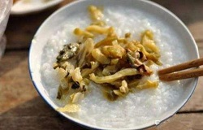

最新知识
美食遍地- 让吃更美好！
菜谱 · 食材 · 魔方 · 关于我们 · 联系我们 · 加入我们 · 服务声明 · 友情链接 · 网站地图 · 移动应用
© 2004-2018 1234小吃货 保留所有权利 - 京ICP证090244号
- 有很多女生之所以体质差，是因为身体中气血不足的关系。
这个时候可以选择通过吃中药的方式来进行调理身体。
通常吃几个疗程的中药就能够有效的改善这种情况。
最好就是去看一下老中医，让医生根据身体的情况，开适合的药房来进行调理。
- 橙子全身都是宝 你用对了吗？ 运动后饮用橙汁，含量丰富的果糖能迅速补充体力，
且能渴提神。特别要注意的是橙汁榨好后应立即饮用，否则空气中
的氧气会使其维
生素C的含量迅速降低。加点盐，补充体力的效果更是明显。

- 众所周知，咸菜是高盐食物，长期大量吃会导致高血压等疾玻同食道黏膜一样，
若我们摄入过多盐分，也会对胃黏膜造成损伤，增加患癌风险。此外，咸
菜腌制过程中会产生亚硝酸盐，具有一定致癌性。